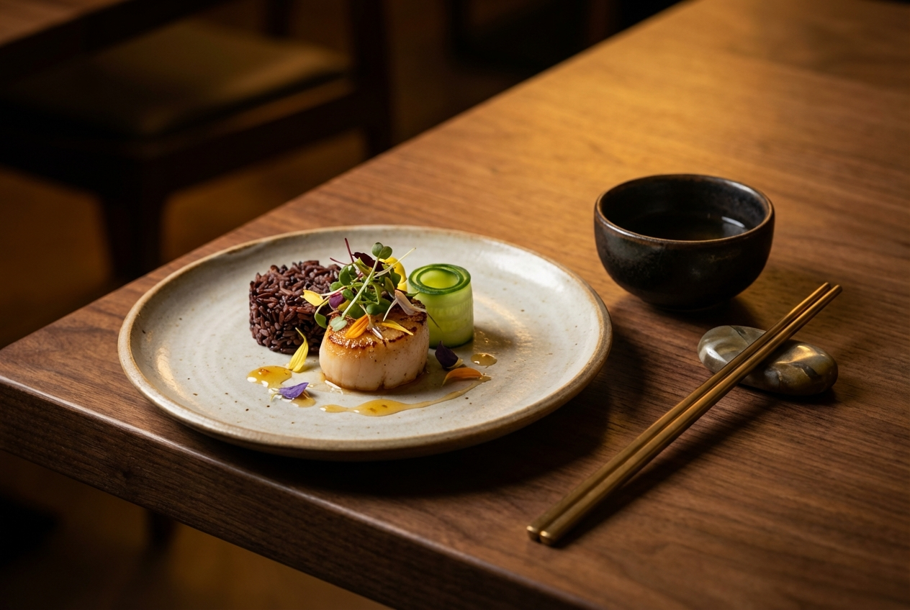

A family-driven restaurant blending the flavors of Thailand, China, and Japan into one menu.
Lotus & Rice Asian Kitchen was born from a simple idea: bring the home-cooked flavors of Asia to Windermere in a warm, welcoming way. Founded in 2021 by the Huang family, the kitchen draws on recipes passed down through three generations — from a grandmother's green curry in Bangkok to a father's hand-pulled noodles in Chengdu.
The name "Lotus & Rice" reflects the two ingredients that tie Asian cuisines together: the lotus flower, a symbol of purity and resilience, and rice, the staple grain that has nourished families across the continent for thousands of years.
What started as a small takeout counter has grown into a neighborhood favorite. As we’ve grown, we’ve expanded to offer both dine-in seating and pickup options, while continuing to focus on quality, consistency, and authentic flavors in every dish.

We believe great Asian food should feel both comforting and memorable. Every dish at Lotus & Rice is made from scratch using traditional techniques, quality ingredients, and genuine care. Our goal is to make authentic Asian fusion accessible, welcoming, and consistently delicious — whether you dine in with us or pick up your order to enjoy at home.
We source produce daily and never freeze our proteins. Sauces and pastes are made in-house from whole spices and aromatics.
Our wok station runs at restaurant-grade heat. Sushi rice is seasoned by hand. Curries simmer low and slow. No microwaves, no shortcuts.
We're proud to be part of the Windermere community. From sponsoring local events to supporting nearby farms, we invest where we live.
Our kitchen is run by a tight-knit crew of eight, led by head chef David Huang and sous chef Mei Lin. David trained in Chinese cuisine in Taipei before spending years in Bangkok and Tokyo, picking up techniques and flavors that now define the Lotus & Rice menu.
Mei brings precision to the sushi bar, having apprenticed at a traditional sushi-ya in Osaka. Together, they balance innovation with respect for the culinary traditions they grew up with.
Every team member shares one thing: a genuine love for feeding people well.